Πραγματικές λήψεις από χωριστό headless Firefox, με ακριβές παλιό overlay οκτώ πηγών και παγωμένο νέο περιεχόμενο. Οι λήψεις είναι Developer evidence. Δεν δηλώνεται ανεξάρτητο browser review ή συνεδριακή ετοιμότητα.
Άνοιξε το πραγματικό τοπικό Συνεργείο με νέα κουίζ · Αρχικά δύο σετ · Ακριβείς έλεγχοι και όρια
Οι προγενέστερες αποτυχίες του δοκιμαστικού εργαλείου και τα πραγματικά ευρήματα R1/R2 διατηρούνται στις αποδείξεις. Η τελική διόρθωση zoom έχει χωριστή στοχευμένη επαλήθευση, όταν υπάρχει.
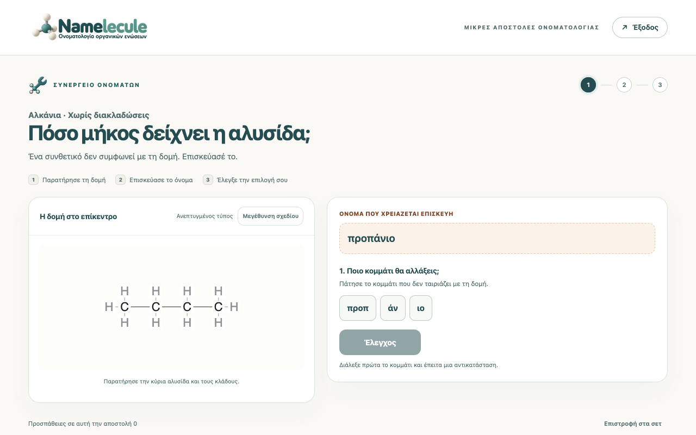
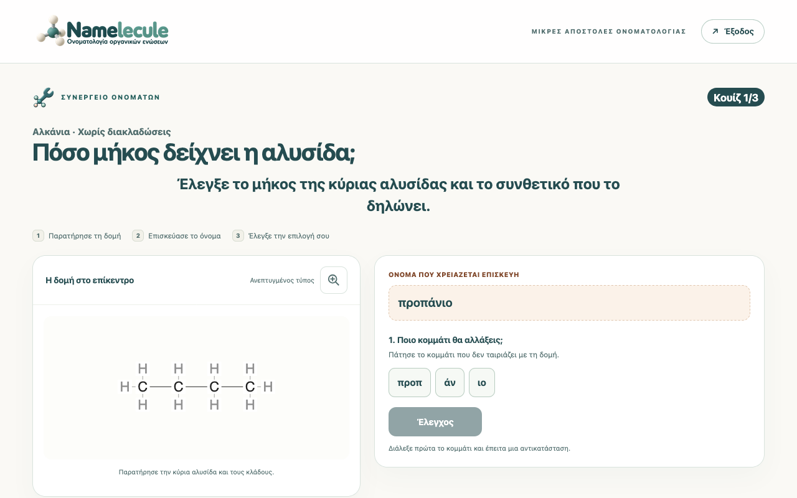
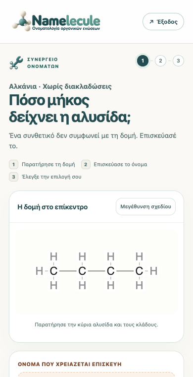
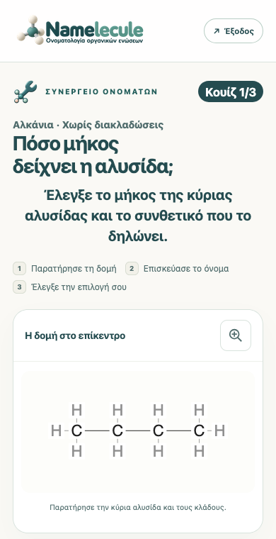
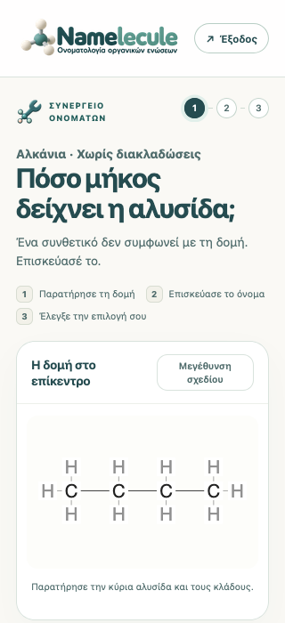
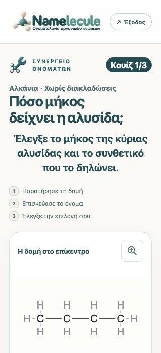
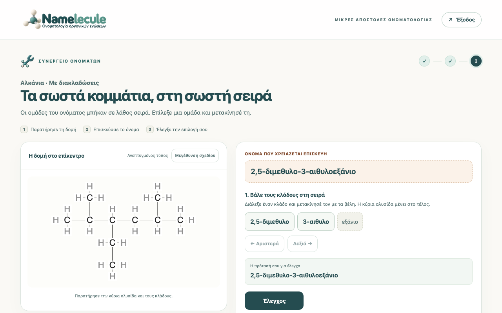
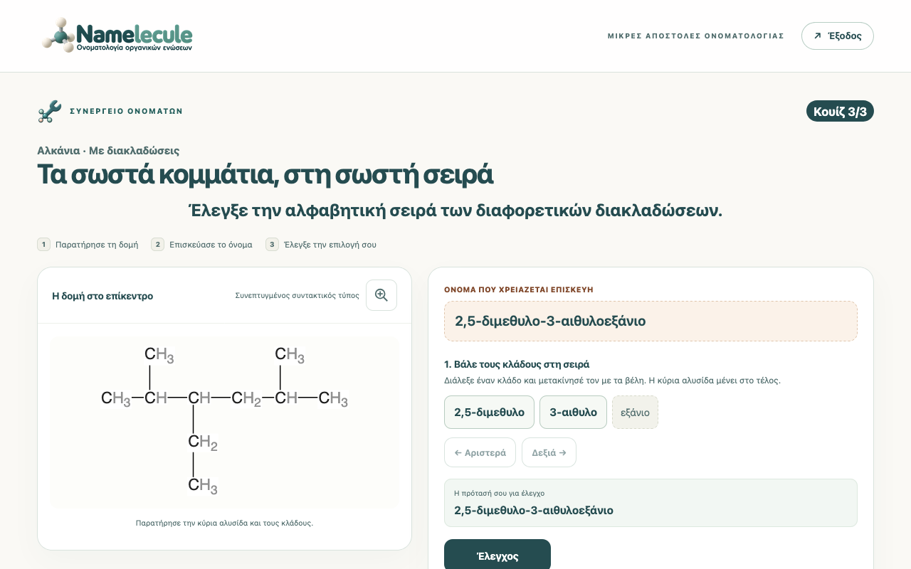
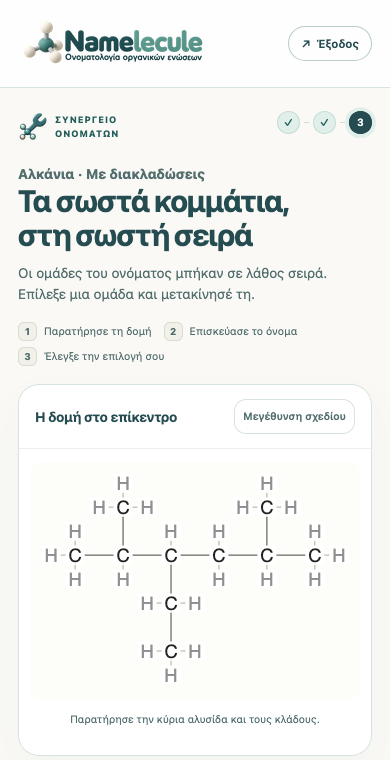
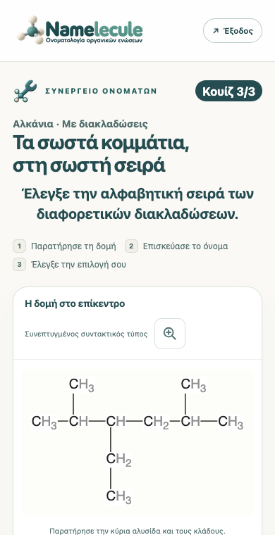
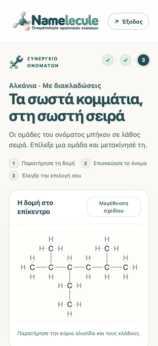
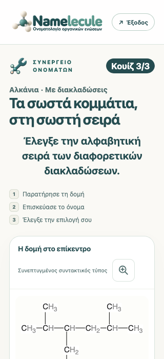